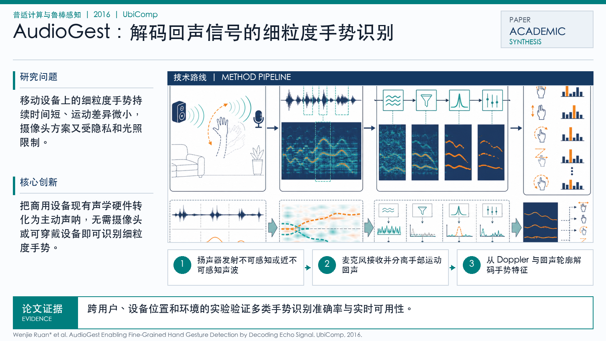

Problem
解决的问题
移动设备上的细粒度手势持续时间短、运动差异微小，摄像头方案又受隐私和光照限制。
Pervasive Computing and Robust Sensing · 2016 · UbiComp
AudioGest Enabling Fine-Grained Hand Gesture Detection by Decoding Echo Signal
Problem
移动设备上的细粒度手势持续时间短、运动差异微小，摄像头方案又受隐私和光照限制。
Value
跨用户、设备位置和环境的实验验证多类手势识别准确率与实时可用性。
Paper-grounded Academic Summary
该代表页依据原文摘要、贡献段与方法图注生成。方法视觉由 ImageGen 按论文证据逐篇绘制，中文研究问题、技术路线、创新点与实验结论采用确定性排版，以保证内容与字符准确。
打开原文 PDF
Technical Route
Innovation